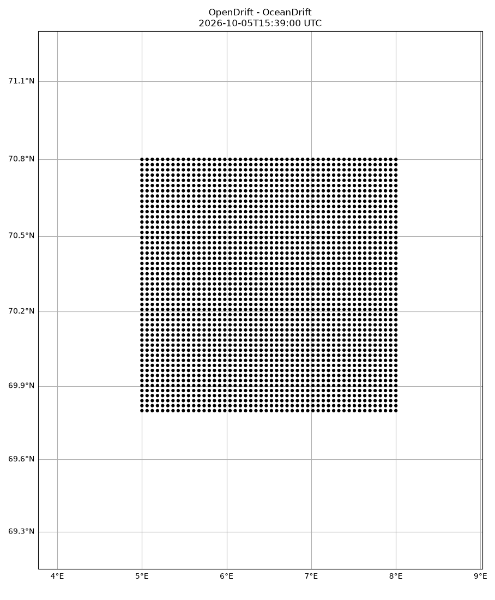
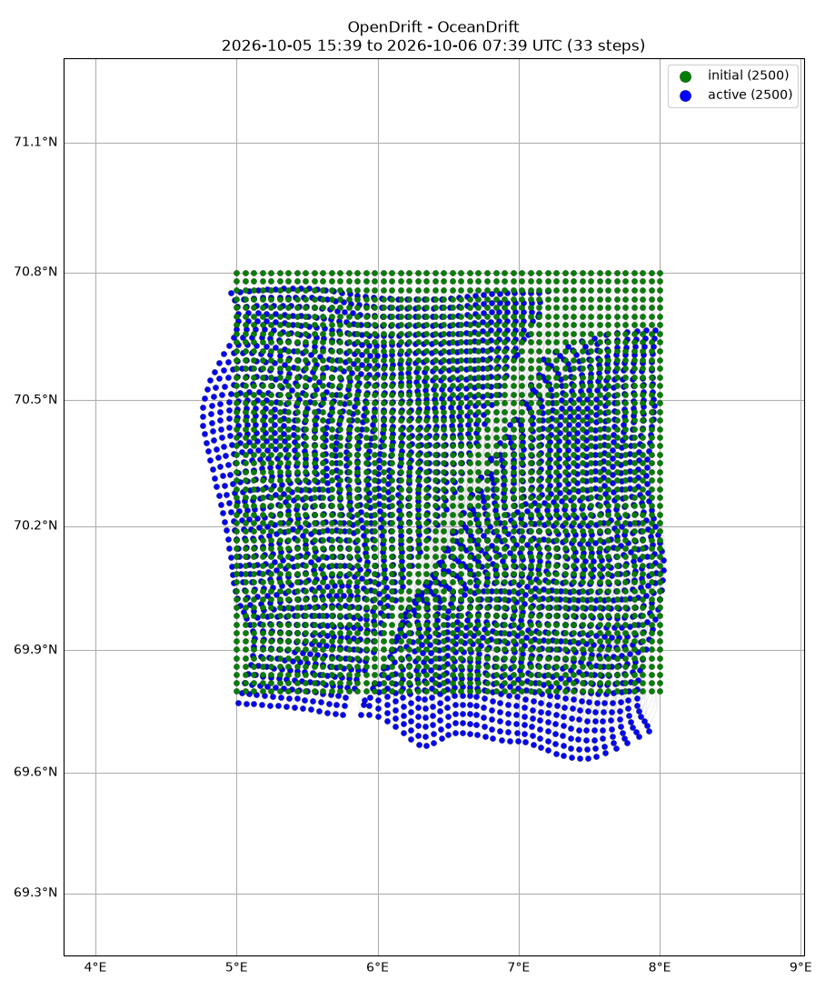

Note
Go to the end to download the full example code.
Reader boundary
Seeding elements around the border of a ocean model domain (NorKyst800) to demonstrate autmatic transition back and forth with another model covering a larger domain (Topaz).
from datetime import datetime
import numpy as np
from opendrift.readers import reader_netCDF_CF_generic
from opendrift.models.oceandrift import OceanDrift
o = OceanDrift(loglevel=20) # Set loglevel to 0 for debug information
# Norkyst
reader_norkyst = reader_netCDF_CF_generic.Reader('https://thredds.met.no/thredds/dodsC/fou-hi/norkystv3_800m_m00_be')
# Topaz
reader_topaz = reader_netCDF_CF_generic.Reader('https://thredds.met.no/thredds/dodsC/cmems/topaz6/dataset-topaz6-arc-15min-3km-be.ncml')
o.add_reader([reader_norkyst, reader_topaz])
o.set_config('environment:fallback:land_binary_mask', 0)
o.set_config('drift:vertical_mixing', False)
15:38:54 INFO opendrift:569: OpenDriftSimulation initialised (version 1.14.11 / v1.14.12-32-g22db1c0)
15:38:54 INFO opendrift.readers:67: Opening file with xr.open_dataset
15:38:58 INFO opendrift.readers.reader_netCDF_CF_generic:340: Detected dimensions: {'x': 'X', 'y': 'Y', 'z': 'depth', 'time': 'time'}
15:38:58 INFO opendrift.readers.basereader:175: Variable x_sea_water_velocity will be rotated from eastward_sea_water_velocity
15:38:58 INFO opendrift.readers.basereader:175: Variable y_sea_water_velocity will be rotated from northward_sea_water_velocity
15:38:58 INFO opendrift.readers.basereader:175: Variable x_wind will be rotated from eastward_wind
15:38:58 INFO opendrift.readers.basereader:175: Variable y_wind will be rotated from northward_wind
15:38:58 INFO opendrift.readers:67: Opening file with xr.open_dataset
15:39:00 INFO opendrift.readers.reader_netCDF_CF_generic:340: Detected dimensions: {'x': 'x', 'y': 'y', 'time': 'time'}
Seeding some particles
lons = np.linspace(5, 8, 50)
lats = np.linspace(69.8, 70.8, 50)
lons, lats = np.meshgrid(lons, lats)
Seed oil elements at defined position and time
o.seed_elements(lons, lats, radius=0, number=2500,
time=datetime.now())
15:39:00 INFO opendrift.models.basemodel.environment:203: Adding a global landmask from GSHHG
15:39:06 INFO opendrift.models.basemodel.environment:227: Fallback values will be used for the following variables which have no readers:
15:39:06 INFO opendrift.models.basemodel.environment:230: horizontal_diffusivity: 0.000000
15:39:06 INFO opendrift.models.basemodel.environment:230: sea_surface_wave_significant_height: 0.000000
15:39:06 INFO opendrift.models.basemodel.environment:230: sea_surface_wave_stokes_drift_x_velocity: 0.000000
15:39:06 INFO opendrift.models.basemodel.environment:230: sea_surface_wave_stokes_drift_y_velocity: 0.000000
15:39:06 INFO opendrift.models.basemodel.environment:230: ocean_mixed_layer_thickness: 50.000000
Running model
o.run(steps=16*4, time_step=900, time_step_output=1800)
15:39:06 INFO opendrift:1910: Skipping environment variable ocean_vertical_diffusivity because of condition ['drift:vertical_mixing', 'is', False]
15:39:06 INFO opendrift:1910: Skipping environment variable ocean_mixed_layer_thickness because of condition ['drift:vertical_mixing', 'is', False]
15:39:06 INFO opendrift:1921: Storing previous values of element property lon because of condition (('general:coastline_action', 'in', ['stranding', 'previous']), 'or', ('general:seafloor_action', 'in', ['previous']))
15:39:06 INFO opendrift:1921: Storing previous values of element property lat because of condition (('general:coastline_action', 'in', ['stranding', 'previous']), 'or', ('general:seafloor_action', 'in', ['previous']))
15:39:06 INFO opendrift:1929: Storing previous values of environment variable sea_surface_height because of condition ['drift:vertical_advection', 'is', True]
15:39:06 INFO opendrift:958: Using existing reader for land_binary_mask to move elements to ocean
15:39:06 INFO opendrift:989: All points are in ocean
15:39:06 INFO opendrift:2237: 2026-10-05 15:39:00.671576 - step 1 of 64 - 2500 active elements (0 deactivated)
15:39:12 INFO opendrift:2237: 2026-10-05 15:54:00.671576 - step 2 of 64 - 2500 active elements (0 deactivated)
15:39:12 INFO opendrift:2237: 2026-10-05 16:09:00.671576 - step 3 of 64 - 2500 active elements (0 deactivated)
15:39:14 INFO opendrift:2237: 2026-10-05 16:24:00.671576 - step 4 of 64 - 2500 active elements (0 deactivated)
15:39:15 INFO opendrift:2237: 2026-10-05 16:39:00.671576 - step 5 of 64 - 2500 active elements (0 deactivated)
15:39:15 INFO opendrift:2237: 2026-10-05 16:54:00.671576 - step 6 of 64 - 2500 active elements (0 deactivated)
15:39:16 INFO opendrift:2237: 2026-10-05 17:09:00.671576 - step 7 of 64 - 2500 active elements (0 deactivated)
15:39:18 INFO opendrift:2237: 2026-10-05 17:24:00.671576 - step 8 of 64 - 2500 active elements (0 deactivated)
15:39:19 INFO opendrift:2237: 2026-10-05 17:39:00.671576 - step 9 of 64 - 2500 active elements (0 deactivated)
15:39:19 INFO opendrift:2237: 2026-10-05 17:54:00.671576 - step 10 of 64 - 2500 active elements (0 deactivated)
15:39:20 INFO opendrift:2237: 2026-10-05 18:09:00.671576 - step 11 of 64 - 2500 active elements (0 deactivated)
15:39:23 INFO opendrift:2237: 2026-10-05 18:24:00.671576 - step 12 of 64 - 2500 active elements (0 deactivated)
15:39:24 INFO opendrift:2237: 2026-10-05 18:39:00.671576 - step 13 of 64 - 2500 active elements (0 deactivated)
15:39:25 INFO opendrift:2237: 2026-10-05 18:54:00.671576 - step 14 of 64 - 2500 active elements (0 deactivated)
15:39:25 INFO opendrift:2237: 2026-10-05 19:09:00.671576 - step 15 of 64 - 2500 active elements (0 deactivated)
15:39:28 INFO opendrift:2237: 2026-10-05 19:24:00.671576 - step 16 of 64 - 2500 active elements (0 deactivated)
15:39:28 INFO opendrift:2237: 2026-10-05 19:39:00.671576 - step 17 of 64 - 2500 active elements (0 deactivated)
15:39:29 INFO opendrift:2237: 2026-10-05 19:54:00.671576 - step 18 of 64 - 2500 active elements (0 deactivated)
15:39:30 INFO opendrift:2237: 2026-10-05 20:09:00.671576 - step 19 of 64 - 2500 active elements (0 deactivated)
15:39:33 INFO opendrift:2237: 2026-10-05 20:24:00.671576 - step 20 of 64 - 2500 active elements (0 deactivated)
15:39:34 INFO opendrift:2237: 2026-10-05 20:39:00.671576 - step 21 of 64 - 2500 active elements (0 deactivated)
15:39:35 INFO opendrift:2237: 2026-10-05 20:54:00.671576 - step 22 of 64 - 2500 active elements (0 deactivated)
15:39:35 INFO opendrift:2237: 2026-10-05 21:09:00.671576 - step 23 of 64 - 2500 active elements (0 deactivated)
15:39:38 INFO opendrift:2237: 2026-10-05 21:24:00.671576 - step 24 of 64 - 2500 active elements (0 deactivated)
15:39:39 INFO opendrift:2237: 2026-10-05 21:39:00.671576 - step 25 of 64 - 2500 active elements (0 deactivated)
15:39:39 INFO opendrift:2237: 2026-10-05 21:54:00.671576 - step 26 of 64 - 2500 active elements (0 deactivated)
15:39:40 INFO opendrift:2237: 2026-10-05 22:09:00.671576 - step 27 of 64 - 2500 active elements (0 deactivated)
15:39:42 INFO opendrift:2237: 2026-10-05 22:24:00.671576 - step 28 of 64 - 2500 active elements (0 deactivated)
15:39:43 INFO opendrift:2237: 2026-10-05 22:39:00.671576 - step 29 of 64 - 2500 active elements (0 deactivated)
15:39:43 INFO opendrift:2237: 2026-10-05 22:54:00.671576 - step 30 of 64 - 2500 active elements (0 deactivated)
15:39:44 INFO opendrift:2237: 2026-10-05 23:09:00.671576 - step 31 of 64 - 2500 active elements (0 deactivated)
15:39:46 INFO opendrift:2237: 2026-10-05 23:24:00.671576 - step 32 of 64 - 2500 active elements (0 deactivated)
15:39:47 INFO opendrift:2237: 2026-10-05 23:39:00.671576 - step 33 of 64 - 2500 active elements (0 deactivated)
15:39:48 INFO opendrift:2237: 2026-10-05 23:54:00.671576 - step 34 of 64 - 2500 active elements (0 deactivated)
15:39:48 INFO opendrift:2237: 2026-10-06 00:09:00.671576 - step 35 of 64 - 2500 active elements (0 deactivated)
15:39:50 INFO opendrift:2237: 2026-10-06 00:24:00.671576 - step 36 of 64 - 2500 active elements (0 deactivated)
15:39:51 INFO opendrift:2237: 2026-10-06 00:39:00.671576 - step 37 of 64 - 2500 active elements (0 deactivated)
15:39:51 INFO opendrift:2237: 2026-10-06 00:54:00.671576 - step 38 of 64 - 2500 active elements (0 deactivated)
15:39:52 INFO opendrift:2237: 2026-10-06 01:09:00.671576 - step 39 of 64 - 2500 active elements (0 deactivated)
15:39:56 INFO opendrift:2237: 2026-10-06 01:24:00.671576 - step 40 of 64 - 2500 active elements (0 deactivated)
15:39:57 INFO opendrift:2237: 2026-10-06 01:39:00.671576 - step 41 of 64 - 2500 active elements (0 deactivated)
15:39:57 INFO opendrift:2237: 2026-10-06 01:54:00.671576 - step 42 of 64 - 2500 active elements (0 deactivated)
15:39:58 INFO opendrift:2237: 2026-10-06 02:09:00.671576 - step 43 of 64 - 2500 active elements (0 deactivated)
15:40:02 INFO opendrift:2237: 2026-10-06 02:24:00.671576 - step 44 of 64 - 2500 active elements (0 deactivated)
15:40:02 INFO opendrift:2237: 2026-10-06 02:39:00.671576 - step 45 of 64 - 2500 active elements (0 deactivated)
15:40:03 INFO opendrift:2237: 2026-10-06 02:54:00.671576 - step 46 of 64 - 2500 active elements (0 deactivated)
15:40:03 INFO opendrift:2237: 2026-10-06 03:09:00.671576 - step 47 of 64 - 2500 active elements (0 deactivated)
15:40:10 INFO opendrift:2237: 2026-10-06 03:24:00.671576 - step 48 of 64 - 2500 active elements (0 deactivated)
15:40:11 INFO opendrift:2237: 2026-10-06 03:39:00.671576 - step 49 of 64 - 2500 active elements (0 deactivated)
15:40:12 INFO opendrift:2237: 2026-10-06 03:54:00.671576 - step 50 of 64 - 2500 active elements (0 deactivated)
15:40:12 INFO opendrift:2237: 2026-10-06 04:09:00.671576 - step 51 of 64 - 2500 active elements (0 deactivated)
15:40:15 INFO opendrift:2237: 2026-10-06 04:24:00.671576 - step 52 of 64 - 2500 active elements (0 deactivated)
15:40:16 INFO opendrift:2237: 2026-10-06 04:39:00.671576 - step 53 of 64 - 2500 active elements (0 deactivated)
15:40:17 INFO opendrift:2237: 2026-10-06 04:54:00.671576 - step 54 of 64 - 2500 active elements (0 deactivated)
15:40:18 INFO opendrift:2237: 2026-10-06 05:09:00.671576 - step 55 of 64 - 2500 active elements (0 deactivated)
15:40:21 INFO opendrift:2237: 2026-10-06 05:24:00.671576 - step 56 of 64 - 2500 active elements (0 deactivated)
15:40:21 INFO opendrift:2237: 2026-10-06 05:39:00.671576 - step 57 of 64 - 2500 active elements (0 deactivated)
15:40:22 INFO opendrift:2237: 2026-10-06 05:54:00.671576 - step 58 of 64 - 2500 active elements (0 deactivated)
15:40:22 INFO opendrift:2237: 2026-10-06 06:09:00.671576 - step 59 of 64 - 2500 active elements (0 deactivated)
15:40:25 INFO opendrift:2237: 2026-10-06 06:24:00.671576 - step 60 of 64 - 2500 active elements (0 deactivated)
15:40:26 INFO opendrift:2237: 2026-10-06 06:39:00.671576 - step 61 of 64 - 2500 active elements (0 deactivated)
15:40:27 INFO opendrift:2237: 2026-10-06 06:54:00.671576 - step 62 of 64 - 2500 active elements (0 deactivated)
15:40:27 INFO opendrift:2237: 2026-10-06 07:09:00.671576 - step 63 of 64 - 2500 active elements (0 deactivated)
15:40:30 INFO opendrift:2237: 2026-10-06 07:24:00.671576 - step 64 of 64 - 2500 active elements (0 deactivated)
Print and plot results
print(o)
o.animation(fast=True)
===========================
--------------------
Reader performance:
--------------------
https://thredds.met.no/thredds/dodsC/fou-hi/norkystv3_800m_m00_be
0:00:44.2 total
0:00:00.0 preparing
0:00:43.8 reading
0:00:00.3 interpolation
0:00:00.0 interpolation_time
0:00:00.3 rotating vectors
0:00:00.0 masking
--------------------
https://thredds.met.no/thredds/dodsC/cmems/topaz6/dataset-topaz6-arc-15min-3km-be.ncml
0:00:37.7 total
0:00:00.0 preparing
0:00:37.6 reading
0:00:00.0 interpolation
0:00:00.0 interpolation_time
0:00:00.1 rotating vectors
0:00:00.0 masking
--------------------
global_landmask
0:00:00.0 total
0:00:00.0 preparing
0:00:00.0 reading
0:00:00.0 masking
--------------------
Performance:
1:35.9 total time
11.7 configuration
0.0 preparing main loop
0.0 moving elements to ocean
1:24.2 main loop
0.2 updating elements
0.0 cleaning up
--------------------
===========================
Model: OceanDrift (OpenDrift version 1.14.11)
2500 active Lagrangian3DArray particles (0 deactivated, 0 scheduled)
-------------------
Environment variables:
-----
sea_floor_depth_below_sea_level
sea_surface_height
x_sea_water_velocity
y_sea_water_velocity
1) https://thredds.met.no/thredds/dodsC/fou-hi/norkystv3_800m_m00_be
2) https://thredds.met.no/thredds/dodsC/cmems/topaz6/dataset-topaz6-arc-15min-3km-be.ncml
-----
upward_sea_water_velocity
x_wind
y_wind
1) https://thredds.met.no/thredds/dodsC/fou-hi/norkystv3_800m_m00_be
-----
land_binary_mask
1) global_landmask
-----
Readers not added for the following variables:
horizontal_diffusivity
sea_surface_wave_significant_height
sea_surface_wave_stokes_drift_x_velocity
sea_surface_wave_stokes_drift_y_velocity
Discarded readers:
Time:
Start: 2026-10-05 15:39:00.671576 UTC
Present: 2026-10-06 07:39:00.671576 UTC
Calculation steps: 64 * 0:15:00 - total time: 16:00:00
Output steps: 33 * 0:30:00
===========================
15:40:30 WARNING opendrift:2613: Plotting fast. This will make your plots less accurate.
15:40:32 INFO opendrift:4823: Saving animation to /root/project/docs/source/gallery/animations/example_reader_boundary_0.gif...
15:40:47 INFO opendrift:3241: Time to make animation: 0:00:17.068528

o.plot(fast=True)

15:40:47 WARNING opendrift:2613: Plotting fast. This will make your plots less accurate.
(<GeoAxes: title={'center': 'OpenDrift - OceanDrift\n2026-10-05 15:39 to 2026-10-06 07:39 UTC (33 steps)'}>, <Figure size 908.898x1100 with 1 Axes>)
Total running time of the script: (2 minutes 9.218 seconds)